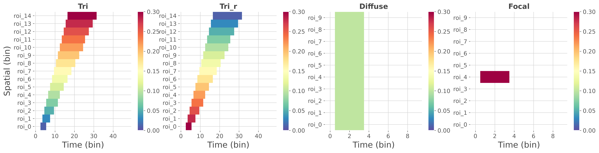
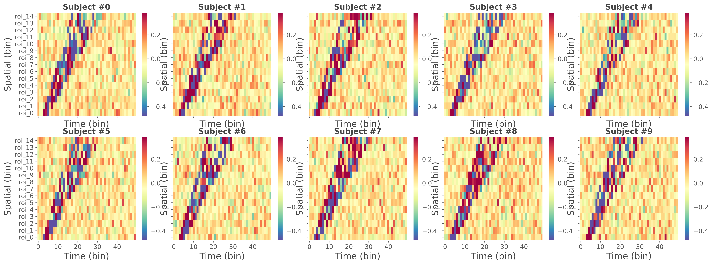
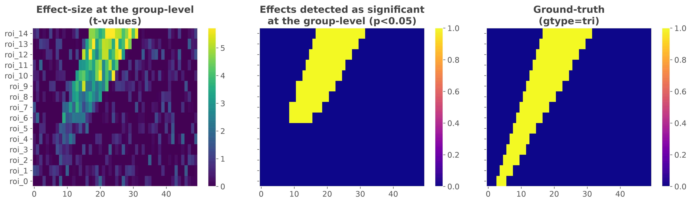

Note
Go to the end to download the full example code.
Generate spatio-temporal ground-truths#
Frites provides some functions to generate spatio-temporal ground-truths (i.e. effects that are distributed across time and space with a predefined profile). Those ground-truths can be particularly interesting to simulate the data coming from multiple subjects, compare group-level strategies such as methods for multiple comparisons.
This example illustrates :
How the predefined ground-truth effects looks like
How to generate the data coming from multiple subjects
How to use the workflow of mutual-information to retrieve the effect
How to use statistical measures to compare the effect detected as significant and the ground-truth
import numpy as np
import xarray as xr
from frites.simulations import sim_ground_truth
from frites.dataset import DatasetEphy
from frites.workflow import WfMi
from frites import set_mpl_style
import matplotlib.pyplot as plt
import matplotlib as mpl
set_mpl_style()
Comparison of the implemented ground truth#
In this first part we illustrate the implemented ground-truths profiles. This includes effects with varying covariance over time and space, weak and diffuse effects and strong and focal effect.
gtypes = ['tri', 'tri_r', 'diffuse', 'focal']
n_subjects = 1
n_epochs = 5
gts = {}
for gtype in gtypes:
gts[gtype] = sim_ground_truth(n_subjects, n_epochs, gtype=gtype,
gt_only=True, gt_as_cov=True)
# plot the four ground-truths
fig, axs = plt.subplots(
ncols=len(gtypes), sharex=False, sharey=False, figsize=(18, 4.5),
gridspec_kw=dict(wspace=.2, left=0.05, right=0.95)
)
axs = np.ravel(axs)
for n_g, g in enumerate(gtypes):
plt.sca(axs[n_g])
df = gts[g].to_pandas().T
plt.pcolormesh(df.columns, df.index, df.values, cmap='Spectral_r',
shading='nearest', vmin=0., vmax=0.3)
plt.title(g.capitalize(), fontweight='bold', fontsize=15)
plt.grid(True)
plt.xlabel('Time (bin)')
if n_g == 0: plt.ylabel('Spatial (bin)')
plt.colorbar()
plt.show()

Note
Here, the ground-truth contains values of covariance at specific time and spatial bins. The covariance reflects where there’s a relation between the brain data and the external continuous y variable and how strong is this relation. High values of covariance indicate that the brain and the continuous y variable are strongly correlated. Conversely, small values of covariance indicate that the brain data and the continuous y variable are weakly correlated.
Data simulation#
In this second part, we use the same function to simulate the data coming from multiple subjects. The returned data are a list of length n_subjects where each element of the list is an array (xarray.DataArray) of shape (n_epochs, n_roi, n_times). In addition to the simulated data, the external continuous variable is set as a coordinate of the trial dimension (‘y’)
gtype = 'tri' # ground truth type
n_subjects = 10 # number of simulated subjects
n_epochs = 100 # number of trials per subject
# generate the data for all of the subjects
da, gt = sim_ground_truth(n_subjects, n_epochs, gtype=gtype, random_state=42)
# get data (min, max) for plotting
vmin, vmax = [], []
for d in da:
d = d.mean('y')
vmin.append(np.percentile(d.data, 5))
vmax.append(np.percentile(d.data, 95))
vmin, vmax = np.min(vmin), np.max(vmax)
# plot the four ground-truths
nrows = 2
ncols = int(np.round(n_subjects / nrows))
width = int(np.round(4 * ncols))
height = int(np.round(4 * nrows))
fig, axs = plt.subplots(
ncols=ncols, nrows=nrows, sharex=True, sharey=True,
figsize=(width, height), gridspec_kw=dict(wspace=.1, left=0.05, right=0.95)
)
axs = np.ravel(axs)
for n_s in range(n_subjects):
# subject selection and mean across trials
df = da[n_s].mean('y').to_pandas()
plt.sca(axs[n_s])
plt.pcolormesh(df.columns, df.index, df.values, cmap='Spectral_r',
shading='nearest', vmin=vmin, vmax=vmax)
plt.title(f"Subject #{n_s}", fontweight='bold', fontsize=15)
plt.grid(True)
plt.xlabel('Time (bin)')
plt.ylabel('Spatial (bin)')
plt.colorbar()
plt.show()

Compute the effect size and group-level statistics#
In this third part, we compute the mutual-information and the statistics at the group-level using the data simulated above. To this end, we first define a dataset containing the electrophysiological. In the simulated data, the spatial dimension is called ‘roi’, the temporal dimension is called ‘times’ and the external continuous y variable is attached along the trial dimension and is called ‘y’. After that, we use a random-effect model for the population with p-values corrected for multiple comparisons using a cluster- based approach.
# define a dataset hosting the data coming from multiple subjects
dt = DatasetEphy(da, y='y', roi='roi', times='times')
# run the statistics at the group-level
wf = WfMi(mi_type='cc', inference='rfx')
mi, pv = wf.fit(dt, n_perm=200, mcp='cluster')
# get the t-values
tv = wf.tvalues
# xarray to dataframe conversion
df_tv = tv.to_pandas().T
df_pv = (pv < 0.05).to_pandas().T
df_gt = gt.astype(int).to_pandas().T
# sphinx_gallery_thumbnail_number = 3
# plot the results
fig, axs = plt.subplots(
ncols=3, sharex=True, sharey=True,
figsize=(16, 4.5), gridspec_kw=dict(wspace=.1, left=0.05, right=0.95)
)
axs = np.ravel(axs)
kw_title = dict(fontweight='bold', fontsize=15)
kw_heatmap = dict(shading='nearest')
plt.sca(axs[0])
plt.pcolormesh(df_tv.columns, df_tv.index, df_tv.values, cmap='viridis',
vmin=0., vmax=np.percentile(df_tv.values, 99), **kw_heatmap)
plt.colorbar()
plt.title(f"Effect-size at the group-level\n(t-values)", **kw_title)
plt.sca(axs[1])
plt.pcolormesh(df_pv.columns, df_pv.index, df_pv.values, cmap='plasma',
vmin=0, vmax=1, **kw_heatmap)
plt.colorbar()
plt.title(f"Effects detected as significant\nat the group-level (p<0.05)",
**kw_title)
plt.sca(axs[2])
plt.pcolormesh(df_gt.columns, df_gt.index, df_gt.values, cmap='plasma',
vmin=0, vmax=1, **kw_heatmap)
plt.colorbar()
plt.title(f"Ground-truth\n(gtype={gtype})", **kw_title)
plt.show()

0%| | Estimating MI : 0/15 [00:00<?, ?it/s]
7%|▋ | Estimating MI : 1/15 [00:00<00:05, 2.53it/s]
13%|█▎ | Estimating MI : 2/15 [00:00<00:04, 2.60it/s]
20%|██ | Estimating MI : 3/15 [00:01<00:04, 2.62it/s]
27%|██▋ | Estimating MI : 4/15 [00:01<00:04, 2.65it/s]
33%|███▎ | Estimating MI : 5/15 [00:01<00:03, 2.65it/s]
40%|████ | Estimating MI : 6/15 [00:02<00:03, 2.66it/s]
47%|████▋ | Estimating MI : 7/15 [00:02<00:03, 2.67it/s]
53%|█████▎ | Estimating MI : 8/15 [00:02<00:02, 2.67it/s]
60%|██████ | Estimating MI : 9/15 [00:03<00:02, 2.68it/s]
67%|██████▋ | Estimating MI : 10/15 [00:03<00:01, 2.69it/s]
73%|███████▎ | Estimating MI : 11/15 [00:04<00:01, 2.68it/s]
80%|████████ | Estimating MI : 12/15 [00:04<00:01, 2.68it/s]
87%|████████▋ | Estimating MI : 13/15 [00:04<00:00, 2.68it/s]
93%|█████████▎| Estimating MI : 14/15 [00:05<00:00, 2.68it/s]
100%|██████████| Estimating MI : 15/15 [00:05<00:00, 2.68it/s]
100%|██████████| Estimating MI : 15/15 [00:05<00:00, 2.68it/s]
Comparison between the effect detected as significant and the ground-truth#
This last section quantifies how well the statistical framework performed on this particular ground-truth. The overall idea is to use statistical measures (namely false / true positive / negative rates) to quantify how well the framework of group-level statistics is able to retrieve the ground-truth.
# bins with / without effect in the ground-truth
tp_gt, tn_gt = (df_gt.values == 1), (df_gt.values == 0)
dim_gt = np.prod(df_gt.values.shape)
print(
"\n"
"Ground-Truth\n"
"------------\n"
f"- Total number of spatio-temporal bins : {dim_gt}\n"
f"- Number of bins with an effect : {tp_gt.sum()}\n"
f"- Number of bins without effect : {tn_gt.sum()}\n"
)
# bins with / without in the retrieved effect
tp_pv, tn_pv = (df_pv.values == 1), (df_pv.values == 0)
dim_pv = np.prod(df_pv.values.shape)
print(
"Bins detected as significant\n"
"----------------------------\n"
f"- Total number of spatio-temporal bins : {dim_pv}\n"
f"- Number of bins with an effect : {tp_pv.sum()}\n"
f"- Number of bins without effect : {tn_pv.sum()}\n"
)
# comparison between the ground-truth
tp = np.logical_and(tp_pv, tp_gt).sum()
tn = np.logical_and(tn_pv, tn_gt).sum()
fp = np.logical_and(tp_pv, tn_gt).sum()
fn = np.logical_and(tn_pv, tp_gt).sum()
print(
"Comparison between the ground-truth and the retrieved effect\n"
"------------------------------------------------------------\n"
f"- Number of true positive : {tp}\n"
f"- Number of true negative : {tn}\n"
f"- Number of false positive : {fp}\n"
f"- Number of false negative : {fn}\n"
)
# Type I error rate (false positive)
p_fp = fp / (fp + tn) # == fp / n_false
# Type II error rate (false negative)
p_fn = fn / (fn + tp) # == fn / n_true
# Sensitivity (true positive rate)
sen = tp / (tp + fn) # == 1. - p_fn == tp / n_true
# Specificity (true negative rate)
spe = tn / (tn + fp) # == 1. - p_fp == tn / n_false
# Matthews Correlation Coefficient
numer = np.array(tp * tn - fp * fn)
denom = np.sqrt((tp + fp) * (tp + fn) * (tn + fp) * (tn + fn))
mcc = numer / denom
print(
f"Statistics\n"
f"----------\n"
f"- Type I error (false positive rate): {p_fp}\n"
f"- Type II error (false negative rate): {p_fn}\n"
f"- Sensitivity (true positive rate): {sen}\n"
f"- Specificity (true negative rate): {spe}\n"
f"- Matthews Correlation Coefficient: {mcc}"
)
Ground-Truth
------------
- Total number of spatio-temporal bins : 750
- Number of bins with an effect : 135
- Number of bins without effect : 615
Bins detected as significant
----------------------------
- Total number of spatio-temporal bins : 750
- Number of bins with an effect : 105
- Number of bins without effect : 645
Comparison between the ground-truth and the retrieved effect
------------------------------------------------------------
- Number of true positive : 103
- Number of true negative : 613
- Number of false positive : 2
- Number of false negative : 32
Statistics
----------
- Type I error (false positive rate): 0.0032520325203252032
- Type II error (false negative rate): 0.23703703703703705
- Sensitivity (true positive rate): 0.762962962962963
- Specificity (true negative rate): 0.9967479674796748
- Matthews Correlation Coefficient: 0.8411594148150925
Total running time of the script: (0 minutes 10.037 seconds)
Estimated memory usage: 537 MB